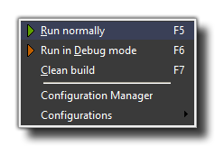

The Run Menu
Here you can find out all about the various options available to you from the drop down run menu.

This menu has options that relate to testing your games and to setting up configurations (note that each of these items has a corresponding button on the GUI Toolbar):
- Run Normally : This will cause the game to run as if it was finished and installed on the target platform for play testing.
- Run in Debug Mode: This option runs the game in debug mode. For a windows game, this opens another window (apart from the game window) with various debug options which you can see below:
For more information on debugging in GameMaker:Studio, please see the section Advanced Use - Debugging.
- Clean Build: This is the same as clicking the green "broom" icon in the main IDE toolbar, and will clear the asset compiler cache. This is important as it prevents any "stale" assets from corrupting your game. It is not necessary to clear the cache every build, but should you be getting any odd errors or corrupted sprites, it should be done, and it should always be done before building any final packages for deployment..

The following two options are limited to the Professional Version of GameMaker:Studio and will not be present on other versions:
- Configuration Manager : Selecting this will open the Configurations Manager.
- Configurations: Placing the mouse over this option will open up a sub-menu with a list of all the currently available configurations from which you can select one to use (this shows the same options as the configurations tab in the main GUI.
NOTE : Although the Windows 8 target is similar to the HTML5 one, it won't allow multiple instances of the same app to run at a time, and if the file is running it can't overwrite it. This means that you
will have to close the app before saving/testing a new version.
Back : The Drop Down Menus
Next : The Window Menu